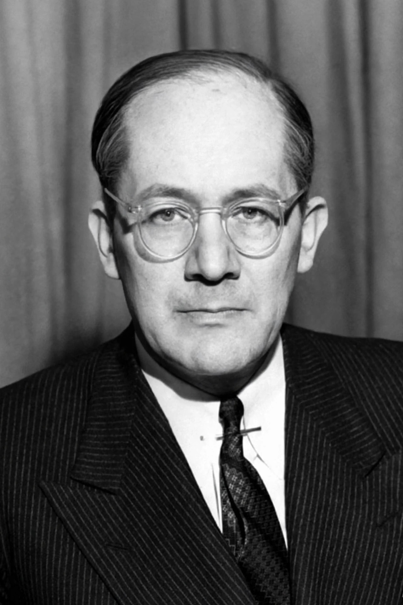

| Raphael Lemkin | |
|---|---|
 | |
| Born | 24 June 1900, Bezwodne, Russian Empire (now Belarus) |
| Died | 28 August 1959 (aged 59), New York City, United States |
| Nationality | Polish |
| Occupation | Lawyer |
| Known for | Coining the term "genocide"; drafting the Genocide Convention |
Raphael Lemkin (Polish: Rafał Lemkin; 24 June 1900 – 28 August 1959) was a Polish lawyer who is best known for coining the term genocide and campaigning to establish it as a crime under international law. His work culminated in the adoption by the United Nations of the Convention on the Prevention and Punishment of the Crime of Genocide in 1948.
Lemkin was born in the village of Bezwodne in the Russian Empire (now in Belarus) into a Polish-Jewish family. He studied linguistics and law at the University of Lwów, where he became interested in the legal response to mass atrocities, including the massacre of Armenians in the Ottoman Empire and the 1921 trial of Soghomon Tehlirian, the assassin of Talaat Pasha. He became a prosecutor in Poland and worked on the codification of Polish criminal law.
After fleeing Poland following the German invasion in 1939, Lemkin eventually reached the United States, where he taught law at Duke University and Yale University. In his 1944 book Axis Rule in Occupied Europe, he coined the word "genocide", combining the Greek genos (race, tribe) with the Latin -cide (killing), to describe the systematic destruction of national, ethnic, racial or religious groups.
Lemkin lobbied tirelessly at the newly founded United Nations for an international treaty outlawing genocide. The Convention on the Prevention and Punishment of the Crime of Genocide was adopted by the UN General Assembly on 9 December 1948 and entered into force in 1951. Lemkin spent his remaining years campaigning for ratification by additional states. He died in New York in 1959, largely unrecognised at the time; his work was later the subject of renewed attention, notably through Samantha Power's book "A Problem from Hell" (2002).